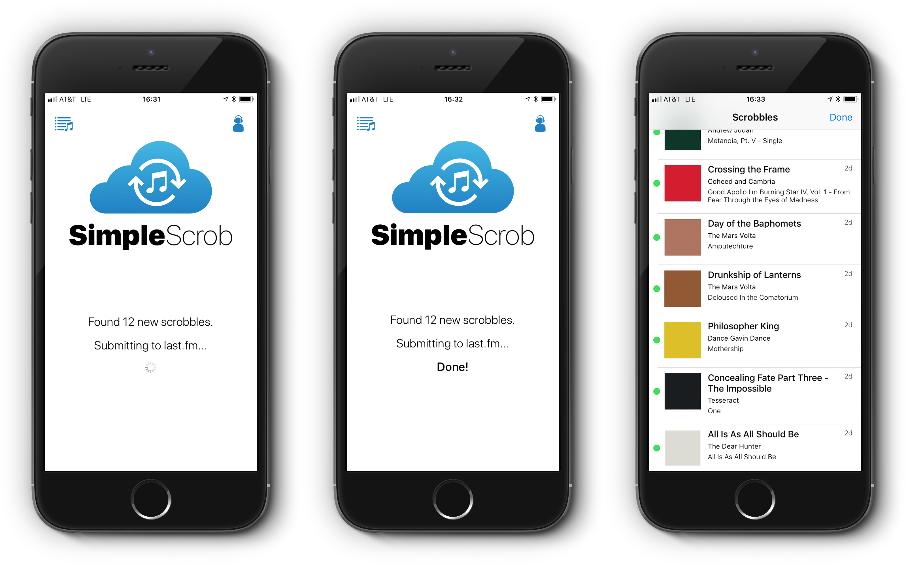

<section id="project-info">
  <div class="container">

    <div class="row">
      <div class="eight columns">
        <a href="../images/portfolio/simplescrob/simplescrob.png" target="_blank">
          
        </a>
      </div>

      <div class="four columns">
        <h2>SimpleScrob</h2>
        <p>
          The simplest Last.fm scrobbler for iOS.
        </p>

        <p>
          <a href="http://jpfreed.com/simplescrob" target="_blank">Website</a>
        </p>

        <a href="https://appstore.com/simplescrob" target="_blank"></a>
      </div>
    </div>

  </div>
</section>
